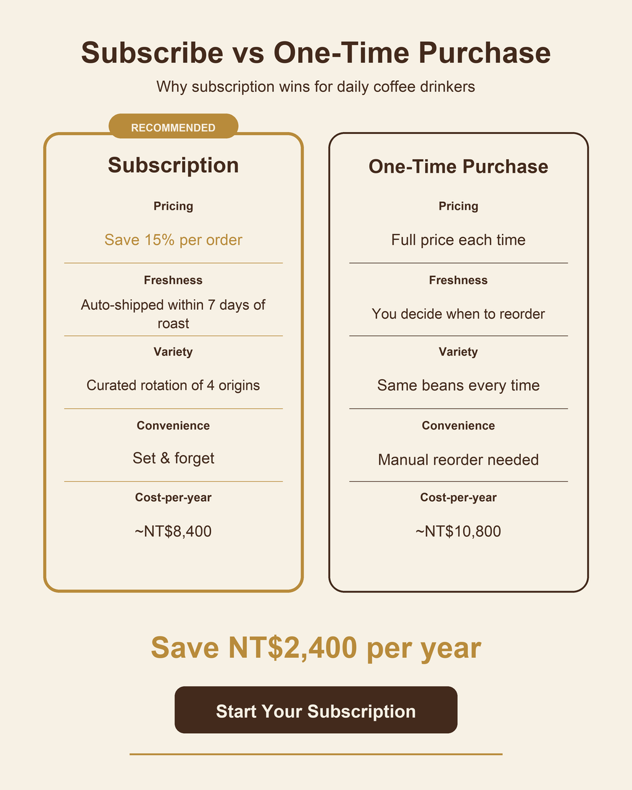

返回 CH6 模板速查站
(C2)
Comparison Infographic 對比資訊圖
把兩個東西並列對比的資訊圖（A vs B、好 vs 壞、舊 vs 新、訂閱 vs 一次購買）。最具說服力、最容易讓觀者有「啊我懂了」感。財務顧問、健身教練、產品經理、行銷人員最常用。
這張卡片你會學到
能判斷何時用對比圖（與 bento / 步驟圖差異）
能拆解 6 段並安排兩欄視覺平衡
能識別 4 種踩雷（兩欄不對稱／結論不夠強／視覺暗示偏頗／顏色語意不對）
(01)
適用場景
這個模板用在哪
兩欄對比資訊圖（A vs B）。重點是「視覺平衡 + 結論明確」——兩欄字級相同、項目數對齊、結論欄底部寫「所以呢」。客戶看完不會困惑、會記得。
典型客戶 / 交付物 銷售型內容創作者 / SaaS / 顧問、單次接案 NT$2,000-5,000、交付：說服型對比圖 1 張（含結論句 + CTA）
四個典型用途：
- 理財顧問定存 vs ETF 對比（5 年差距用視覺說清楚）
- 健身教練跑步 vs 重訓對比（幫學員選擇）
- PM 訂閱 vs 一次購買對比（說服客戶選訂閱）
- 工作室自學 vs 上課對比（招生 EDM 主圖）
| 對比項 | 本卡片 · C2 Comparison Infographic 對比資訊圖 | 近似模板 |
|---|---|---|
| 結構 | 兩欄對比（左 vs 右） | C1：bento grid；C3：垂直步驟 |
| 項目對比 | 必須對齊（每行兩語對應） | C1：每格獨立 |
| 結論 | 通常底部 1 個強結論 | C1：每格獨立重點 |
| 色彩語意 | 左右常用對比色（暖 vs 冷 / 弱 vs 強） | C1：單色板 |
| 使用場景 | 說服 / 教育 / 比較 | C1：並列重點；C3：流程教學 |
| 產出尺寸 | 通常 1:1 或 4:5 | 其他：通用 |
一句話判斷：客戶問「我要說服客戶選 A 而不是 B」走 C2；問「並列 5 個重點」走 C1；問「分步驟教程」走 C3。C2 在「銷售型內容」最有力——一張對比圖能直接帶轉換、客戶願意付高價。
(02)
模板拆解｜6 段 prompt 結構
對比資訊圖 6 段。核心難度在「視覺平衡」——兩欄字級不對齊、項目不對應、視覺暗示偏頗（結論已經寫在臉上）：
| 段 | 段落 | 必問還是可預設 | 填什麼 |
|---|---|---|---|
| 1 | topic 對比主題 | 必問 | What vs What（簡短描述、≤ 6 字）+ 為何要比 |
| 2 | two-column structure | 必問 | 左欄 = A 選項、右欄 = B 選項；標題 + 5-7 個對比項 |
| 3 | comparison items | 必問 | 每行：左 = A 的特徵、右 = B 的特徵；逐行對應、字數平衡 |
| 4 | verdict 結論 | 必問 | 底部 1 句結論（≤ 12 字）+ CTA 引導 |
| 5 | color semantics | 可預設 | 對比色：暖 vs 冷、深 vs 淺；不要紅 vs 綠（色盲不友善） |
| 6 | 限制 | 固定寫死 | 禁忌：兩欄字級不一、項目數不對齊、結論曖昧、色彩太刺眼、項目超過 7 個 |
記憶口訣：主題 → 兩欄 → 項目 → 結論 → 色 → 禁。新手最常結論曖昧——客戶要的是「所以選 B」、不是「兩個各有優點」。明確寫結論、用視覺強調（粗體 / 大字 / 對比色）。
(03)
示範圖｜可複製、可重現
下面這張是 OPEN BEANS「定額訂閱 vs 一次購買」對比圖。左欄訂閱（推薦版本、燙金強調），右欄一次購買（中性灰色），底部結論「年省 NT$2,400」+ CTA「Start Subscription」。

完整 prompt · OPEN BEANS 訂閱 vs 一次購買對比
請生成一張兩欄對比資訊圖（comparison infographic）： 【整體】4:5 直立比例、適合 IG / Threads 貼文。 【主題】「Subscribe vs One-Time Purchase」（畫面頂部標題、無襯線粗體、深棕、置中） 副標：「Why subscription wins for daily coffee drinkers」（細體、淺棕、置中） 【兩欄結構】 - 左欄（推薦欄）：「Subscription」+ 燙金邊框 + 燙金「RECOMMENDED」徽章在欄頂 - 右欄（中性欄）：「One-Time Purchase」+ 灰色邊框、無徽章 【對比項目（5 行、每行兩欄並列）】 1. Pricing：Save 15% per order（左、燙金強調）｜Full price each time（右、中性灰） 2. Freshness：Auto-shipped within 7 days of roast｜You decide when to reorder 3. Variety：Curated rotation of 4 origins｜Same beans every time 4. Convenience：Set & forget｜Manual reorder needed 5. Cost-per-year：~NT$8,400｜~NT$10,800 【結論區（底部）】粗體大字：「Save NT$2,400 per year」（燙金）+ CTA 按鈕：「Start Your Subscription」（深棕填充、米白文字） 【色板】嚴格 3 色：米白底 + 深棕字（中性對比） + 燙金 accent（強調訂閱欄）。不要紅 / 綠（色盲不友善）。 【字體】2 種：標題用無襯線粗體、項目用無襯線細體。全英文。 【限制】嚴禁人物、嚴禁兩欄字級不一、嚴禁項目超過 7 行、嚴禁結論曖昧（必有明確 winner）、嚴禁色彩刺眼、嚴禁中文字。
讀圖時看這 4 個點：(1) 兩欄字級對齊嗎？(2) 對比項目逐行有沒有對應（不能左欄 5 項、右欄 4 項）？(3) 結論明不明確（看完知道選哪個）？(4) 色彩語意對嗎（推薦欄 vs 中性欄視覺重量明顯）？
(04)
改成你的場景｜踩雷與失敗案例
把 prompt 拿來、改 3 個替換槽就變你的版本：
| 替換槽 | 你的版本 |
|---|---|
| ⓐ 對比主題 = ?（A vs B） | 例：訂閱 vs 一次購買 / 自學 vs 上課 / 跑步 vs 重訓 |
| ⓑ 對比項目 = ?（5-7 項、要逐行對應） | 例：價格 / 時間 / 效果 / 便利度 / 年省成本 |
| ⓒ 結論 = ?（≤ 12 字 + CTA） | 例：「Save NT$2,400 per year」+「Start Subscription」 |
最常見的 4 種踩雷：
- 兩欄項目不對齊 左欄 5 項、右欄 4 項——視覺平衡毀掉。解法：明確寫「each row must have content in both columns」「never leave a column blank」。
- 結論曖昧 「兩個各有優點」這種結論等於沒結論。解法：明確寫結論句子（「Save NT$2,400 per year」）+ CTA 按鈕、不要寫「choose what fits you」這種廢話。
- 用紅 vs 綠對比 色盲不友善、且文化暗示太強（紅＝錯）。解法：用「燙金 vs 灰」「藍 vs 灰」「深棕 vs 淺棕」這類「強調 vs 中性」對比、避免紅綠。
- 中文對比結論一律後製 AI 生圖工具的中文字體限制。C2 的最佳策略：英文版用 AI 直接生成（Save NT$2,400 / year）、中文版（「年省 2,400 元」「立即訂閱」）走 後製字體疊圖工作流附錄。
實戰提醒：C2 對比圖的「結論句」與「CTA 按鈕」是轉換關鍵——客戶看到「年省 2,400」會立刻心動。用 Figma 後製疊上「金萱粗體」級別的中文結論字、按鈕字體醒目度提升 2-3 倍、轉換率明顯不同。
交付提醒 本卡片的 AI 生成的示範圖不是可直接給客戶的最終交付品。中文商業案一律先用 AI 生出構圖（含英文佔位文字）、再走 後製字體疊圖工作流 在 Figma／Canva 疊上中文、最後校稿確認才交付給客戶。
本卡片改寫自 ConardLi／garden-skills 之
comparison-infographic.md 模板（MIT License、2026），已對中文進行台灣用語在地化、加入本地接案情境與失敗案例。